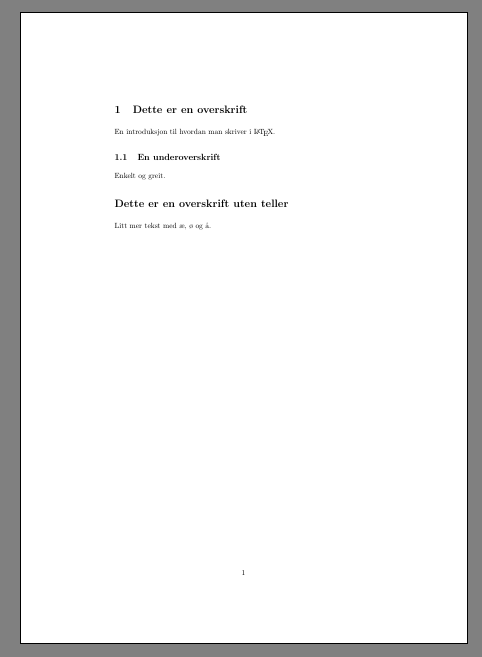

8 LaTeX
Analyseenheten i SKDE skriver de fleste rapporter i LaTeX ved hjelp av overleaf.com.
8.1 Skrive en rapport eller et notat
SKDE har noen maler som kan brukes. Dokumentmaler finnes her.
8.2 Forside
Til barnehelseatlasrapporten ble det lagd en forside, og det er denne vi bruker som mal for fremtidige rapporter ved SKDE. For å kunne endre teksten på forsiden og samtidig bevare samme font, må fonten Open Sans installeres på maskinen. Dette kan enten gjøres ved å få Helse Nord IKT til å installere fonten, eller ved å bruke denne metoden (install fonts without administrator access).
Ved bytte av forsidebilde i Adobe Acrobate Pro vil informasjon om tidligere bilde ligge i filen, og filen vil derfor bli uhensiktsmessig stor. For å bli kvitt denne informasjonen kan man - gå inn på Fil/Instillinger/Dokumenter og huke av Fjern skjult informasjon når du lukker dokumentet. - Lukk så dokumentet og velg Fjern all informasjon, men ikke lukk dokumentet. - Ta bort avhuking på Metadata og Overlappende objekter, men fjern informasjon om Slettet eller beskåret innhold. - Trykk på Fjern og lagre dokumentet.
8.3 Oversettelse av Helseatlas
8.3.1 Hvordan få et LaTeX-dokument klar for oversettelse
Oversettelse av Helseatlas (rapporter og faktaark) har blir gjort av Anneli Olsbø ved Allegro AS. Før dokumentene sendes til Allegro for oversettelse, må de konverteres til Word. For å få dette til mest mulig smertefritt gjøres følgende:
- Fjern unødvendige sider (forside, side 2, bakside etc.).
- Slå av fancyheadings ved å bruke
\pagestyle{empty}på hele dokumentet. - Bruk følgende kode for å tvinge LaTeX til å ikke bryte ord
\tolerance=1
\emergencystretch=\maxdimen
\hyphenpenalty=10000
\hbadness=10000- Venstrejuster all tekst med
\raggedright - Bruk
\usepackage[demo]{graphicx}for å legge inn svarte bokser i steden for figurer. Fungerer ikke alltid, så bruk eventuelt\usepackage[allfiguresdraft]{draftfigure}(draftfigure.sty må lastes ned og legges sammen med tex-dokumentet) - Bruk en font som er enkel å konvertere til word (f.eks
calibri). - Konverter pdf-filen til word med Adobe Acrobate Pro
8.3.2 Hvordan konvertere word-dokumentet tilbake til LaTeX
- Lagre som rtf i word
- Konvertere med
rtf2latex2e -n -f -p 1 <filnavn.rtf>med en linux/unix-maskin - Hvis ikke dette går:
- Lagre først som doc
- Åpne doc og lagre som rtf
8.3.2.1 regex
- Erstatte tusenskilletegn
for i in *.tex; do sed -e 's/\([0-9]\)\\,\([0-9][0-9][0-9]\)/\1,\2/g' $i > tmp; mv tmp $i; done- Erstatte desimaltegn komma med punktum
for i in *.tex; do sed -e 's/\([0-9]\),\([0-9]\)/\1.\2/g' $i > tmp; mv tmp $i; done8.4 En enkel start
Dette dokumentet er omtrent så enkelt det kan bli med LaTeX
\documentclass[a4paper, norsk]{article}
\usepackage[utf8]{inputenc}
\usepackage[norsk]{babel}
\usepackage{parskip}
\begin{document}
\section{Dette er en overskrift}
En introduksjon til hvordan man skriver i \LaTeX.
\subsection{En underoverskrift}
Enkelt og greit.
\section*{Dette er en overskrift uten teller}
Litt mer tekst med æ, ø og å.
\end{document}- Et LaTeX-dokument starter alltid med
documentclass. Her spesifiserer man hva slags dokument man skal skrive (article/report/book) og gir noen instillinger (at dokumentet er på norsk og at det er A4). - Man legger så inn noen pakker man vil bruke. Her har jeg brukt pakken
inputencmed valgetutf8for å kunne skrive æ, ø og å. Jeg bruker i tillegg pakkenbabelmed valgnorsk, for å bryte ord riktig ved tvunget linjeskift. Til slutt bruker jeg pakkenparskipfor å få rom mellom avsnitt. - Mellom
\begin{document}og\end{document}skriver man inn selve teksten. - Overskrifter og underoverskrifter skrives i
\section{}og\subsection{}.
Kopier teksten inn i et nytt dokument i TeXmaker, lagre det, og trykk på F6. Dokumentet blir da kompilert og lager en pdf. pdf-filen kan åpnes ved å trykke F7. Dette vil gi et dokument som ser slik ut:

8.4.1 Diverse man må huske
- 40 % skrives
40\,\% - "friske" skrives
<<friske>> - én skrives
{\'e}n
8.5 BibTeX
Når man legger inn referanser i LaTeX bruker man som regel bibtex. Da lager man en egen fil som heter noe som ender på .bib. I denne skrives alle referansene, omtrent slik som dette:
@article{Adler2013,
author = {Adler, Jeremy and Sandberg, Kelly C. and Shpeen, Benjamin H. and Eder, Sally J. and Dhanani, Muhammad and Clark, Sarah J. and Freed, Gary L},
title = {Variation in {I}nfliximab Administration Practices in the Treatment of Pediatric Inflammatory Bowel Disease},
journal = "J Pediatr. Gastroenterol. Nutr.",
year = {2013},
volume = {57},
number = {1},
pages = {35-38},
}
@misc{dagkir,
author = {Lise Balteskard and Trygve Deraas and Olav Helge Førde and Trine Magnus and Frank Olsen and Bård Uleberg},
title = {Dagkirurgi i {N}orge 2011-2013, utvalgte inngrep},
month = {Januar},
year = {2015},
isbn = {978-82-93141-16-7},
note = {{ISBN: 978-82-93141-16-7}}
}Adler2013ogdagkirer "nøkkelen" man bruker for å sitere disse referansene i teksten. Det gjør man ved å skrive\cite{Adler2013}der man vil putte siteringen.- Man skiller forfattere med
and - Alt, bortsett fra første bokstav, i tittel blir små bokstaver, så hvis man vil beholde stor bokstav må bokstaven "beskyttes" med klammeparantes (som i
{I}nfliximab). - Når man skal kompilere LaTeX-dokumentet når man bruker bibtex må man gjøre dette flere ganger for at alt skal bli riktig. I TeXmaker må man typisk gjøre følgende:
F6,F11,F6,F6(F11for å kompilere bibtex-filen). - Å finne "riktig" referansestil, både i tekst og i referanselisten til slutt, kan være litt pes. Kan være lurt å bruke enten natbib eller biblatex.
- Se ellers annen bibtex-dokumentasjon på nett.
- I barnehelseatlasrapporten ville vi ha to referanselister: en for de som ble sitert i teksten og en for resten av artiklene i vår bib-fil. Dette ble gjort ved bruk av pakken
bibtopicog det som står etter\begin{btSect}.
8.5.1 Konvertere fra Pubmed til BibTeX
Følgende nettside kan brukes til å søke opp artikler i Pubmed og konvertere til BibTeX: www.bioinformatics.org/texmed
8.5.2 Bruke LaTeX
Google er din venn.
8.6 Spor endringer i LaTeX ved bruk av latexdiff
latexdiff lager en tex-fil ut fra forskjellene mellom to tex-filer, og fargelegger/stryker over det som er gjort av endringer mellom to versjoner. Denne tex-filen kan vi så kompilere og lage en pdf. Alt dette må gjøres lokalt, noe som betyr at LaTeX må være installert på maskinen (MikTeX, hvis du sitter på en Windows-maskin). I tillegg må man ha python installert (mer om det senere).
8.6.1 Slå sammen flere flettede tex-filer til én tex-fil
Vi jobber som regel med flere tex-filer ved bruk av \input{}. latexdiff fungerer bare på en fil av gangen. Vi må derfor samle sammen alle filene til én. Følgende python-script samler sammen flere tex-filer til én fil (kopiert fra Andrew Walker):
#!/usr/bin/env python
import sys
import os
import re
inputPattern = re.compile('\\input{(.*)}')
def flattenLatex( rootFilename ):
dirpath, filename = os.path.split(rootFilename)
with open(rootFilename,'r') as fh:
for line in fh:
match = inputPattern.search( line )
if match:
newFile = match.group(1)
if not newFile.endswith('tex'):
newFile += '.tex'
flattenLatex( os.path.join(dirpath,newFile) )
else:
sys.stdout.write(line)
if __name__ == "__main__":
flattenLatex( sys.argv[1] )- Kopier innholdet til en fil, kall filen f.eks flatten-latex.py, og legg den i mappen der du skal sammenligne to dokumenter
- Åpne ´bash´ i denne mappen (´git-bash´ hvis du sitter på en Windows-maskin).
- Gjør skriptet kjørbart: ´chmod u+x flatten-latex.py´
- Sørg for at du har to mapper med to ulike versjoner av et LaTeX-prosjekt i samme mappe (dette kan gjøres ved å klone samme overleaf-dokument to ganger og gå tilbake i historien på det ene).
- Lag flate tex-versjoner av de to LaTeX-prosjektene:
bash ./flatten-latex.py mappe1/rapport.tex > gammel.tex ./flatten-latex.py mappe2/rapport.tex > ny.tex Man har nå to tex-filer man kan kjøre latexdiff på
8.6.2 Kjøre latexdiff på to tex-filer
- Vi kan nå lage en ny tex-fil, som vi legger i mappen der nyeste versjon av LaTeX-prosjektet ligger (i dette tilfelle ´mappe2´)
latexdiff gammel.tex ny.tex > mappe2/diff.texDet legges i den mappen, slik at vi kan kompilere filen etterpå og få med figurer etc. - Gå inn i mappen og kompiler dokumentet (i vårt tilfelle bruker vi som regel lualatex
cd mappe2
lualatex diff
biber diff
lualatex diff
lualatex diffDette går som regel ikke smertefritt... Jeg fikk det ikke til på første forsøk i Windows. Hvis du er heldig har du nå et dokument som heter diff.pdf som viser endringene mellom to versjoner.